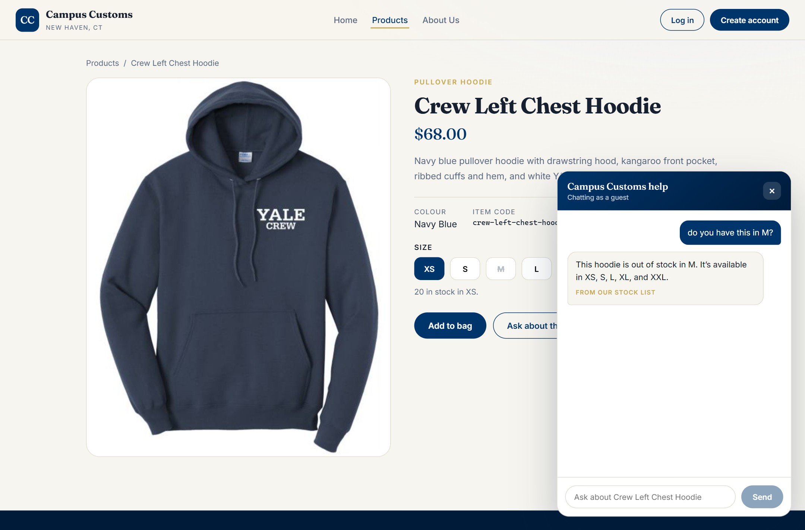
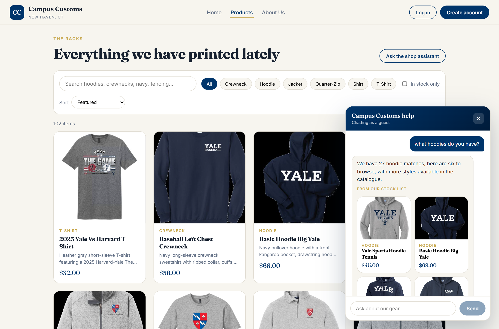
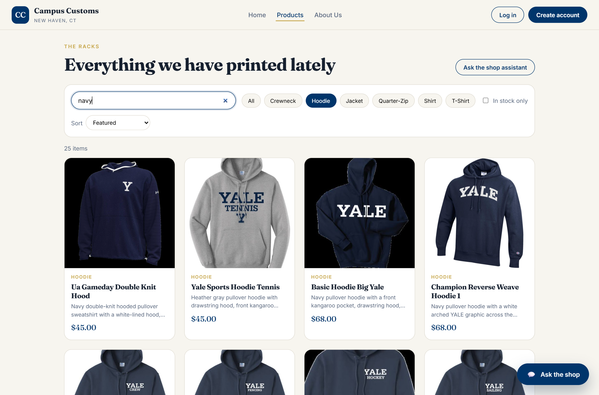
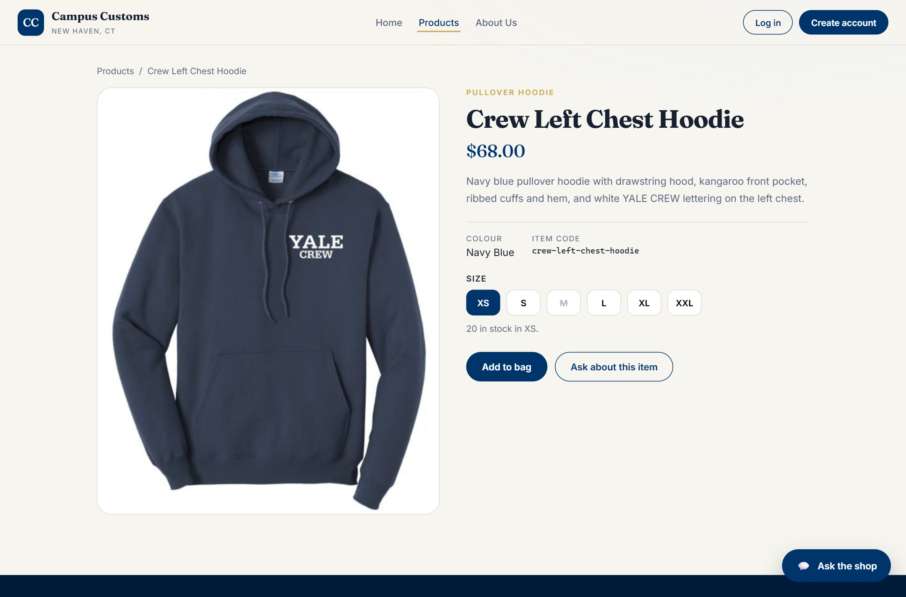
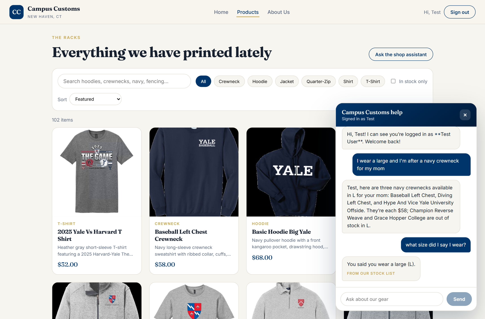
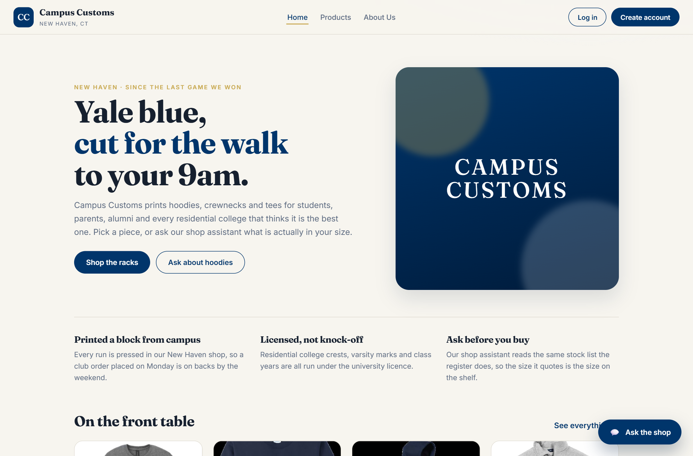

Six checks run against the live site with the course data pack in place, driven end to end in
Chrome by frontend/scripts/capture_app_check.mjs. Every screenshot below is one of
those runs.
uvicorn main:app --reload --port 8000
crew-left-chest-hoodie is open and the shopper asks
“do you have this in M?” in the panel at the bottom right.
The assistant answers “This hoodie is out of stock in M. It’s available in XS, S, L, XL, and
XXL.” It knew which product “this” meant from the page context, and the sizes came from the
inventory table — the “from our stock list” tag under the bubble is only set when a
tool supplied the facts. The size row behind it agrees: M is struck through and unclickable.
| Size | quantity in campus_customs.db | What the chat said |
|---|---|---|
| XS | 20 | available |
| S | 12 | available |
| M | 0 | out of stock |
| L | 8 | available |
| XL | 20 | available |
| XXL | 5 | available |

This is the Problem 7 contract working: the agent called search_products, returned
structured matches in ShopReply.products, and the front end drew them with the same
tile component the grid uses. Every card was re-read from the database by its catalogue slug
before rendering, and clicking one opens that item’s single-item page.

Improvement 1 from usability.md. The search is debounced by 220 ms and the grid shows
shimmering skeleton tiles while the request is in flight, so a 102-product catalogue stays
navigable and the page never flashes blank. The chips are built by folding the pack’s 22
free-text garment types into six shopping categories; category, sort and “in stock only” all
narrow the same result set.

M is struck through and unclickable because its quantity is zero; XS is selected and the line under the row reads “20 in stock in XS.” This is the page that both a grid tile and a chat card open, and it is where the agent gets its page context from.

The transcript above the new question was re-read from chat_messages after the
reload, not held in the browser, and the agent answers “You said you wear a large (L).” The
header shows “Signed in as Test”, which is the customer identity the agent receives in its deps.

The nav links to Home, Products, About Us, Log in and Create account, and the chat launcher sits in the bottom right on every page. The product photos are served through the trimming step, so the pack’s black letterbox bars do not reach the grid.